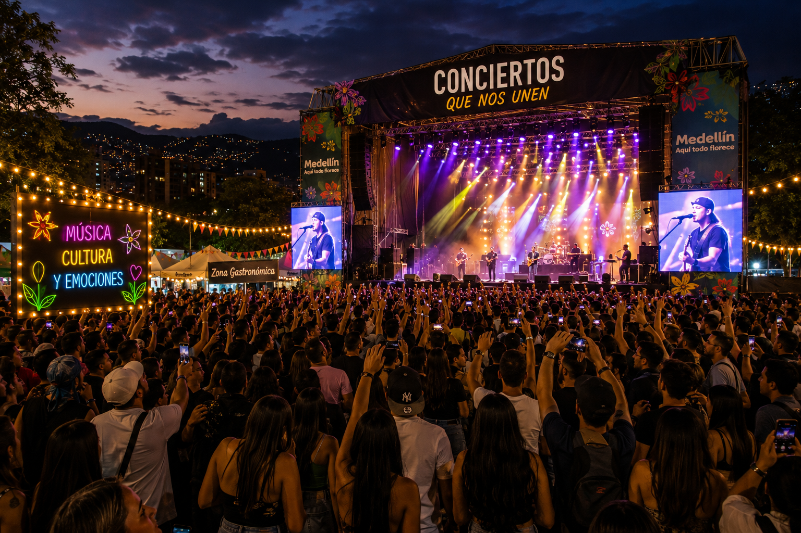
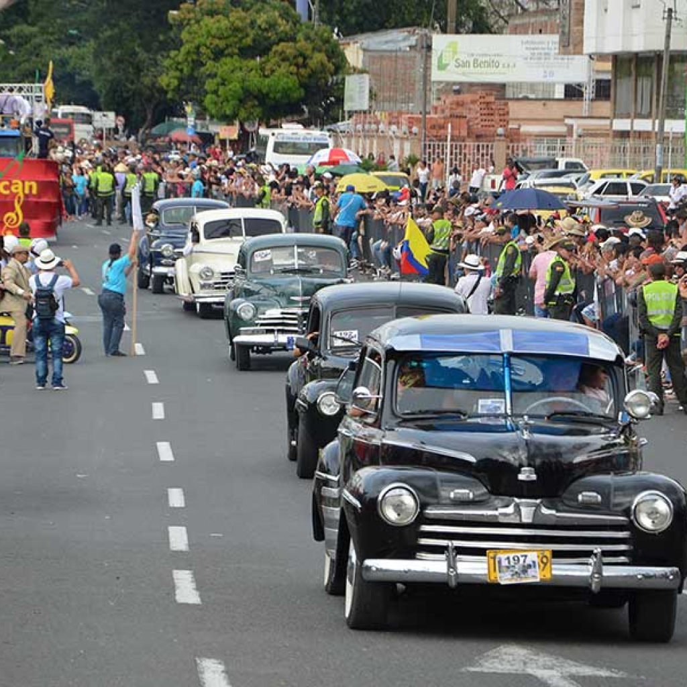
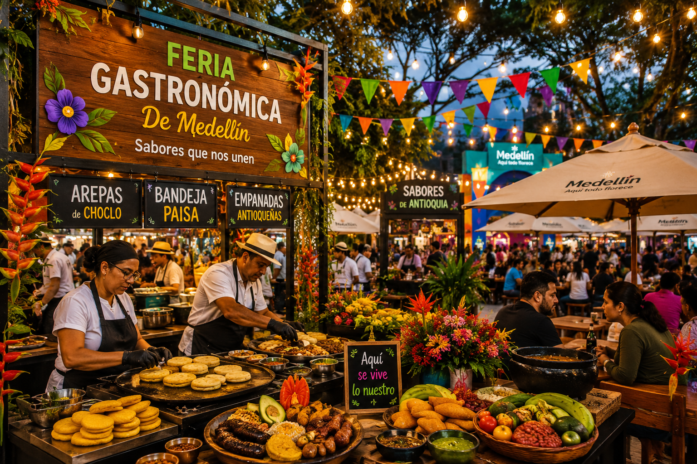
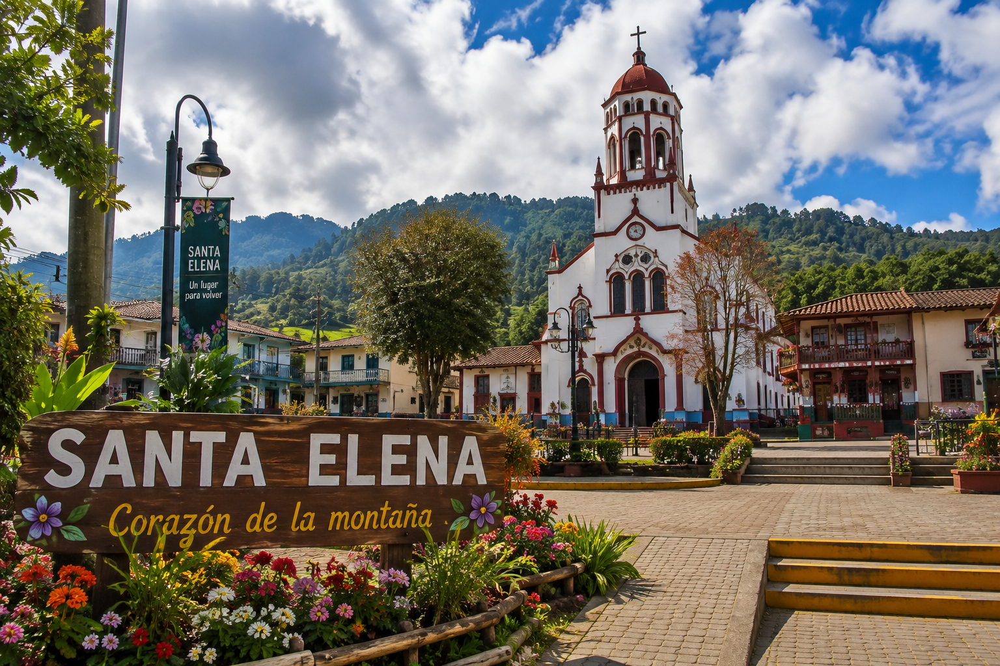
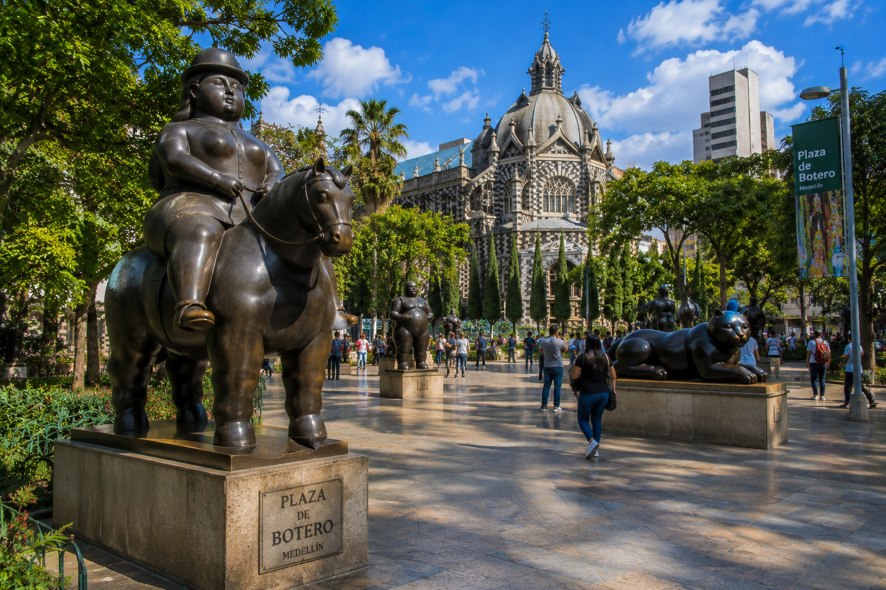
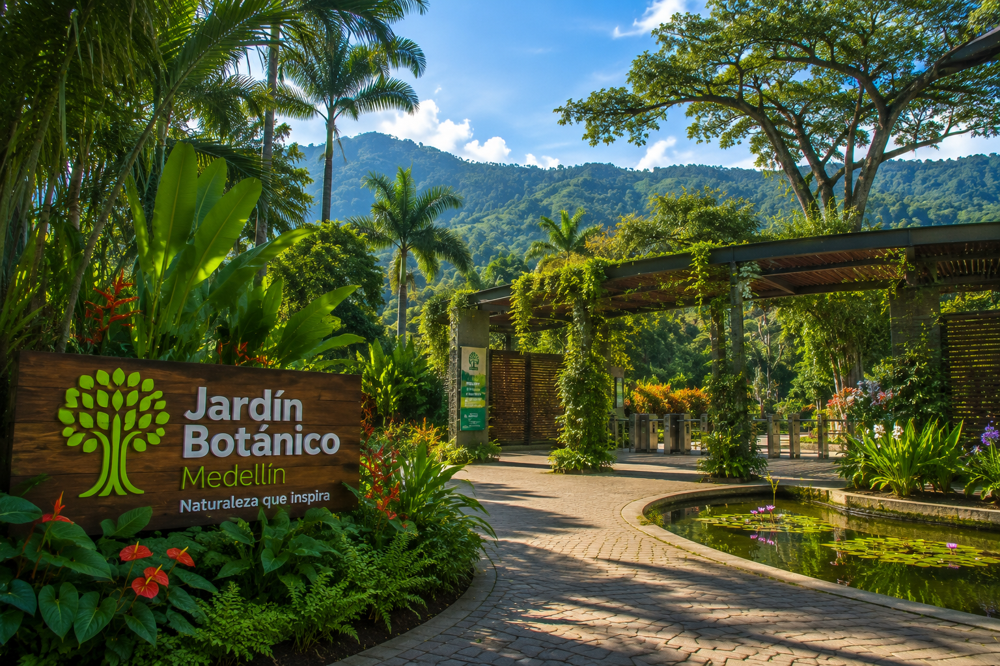
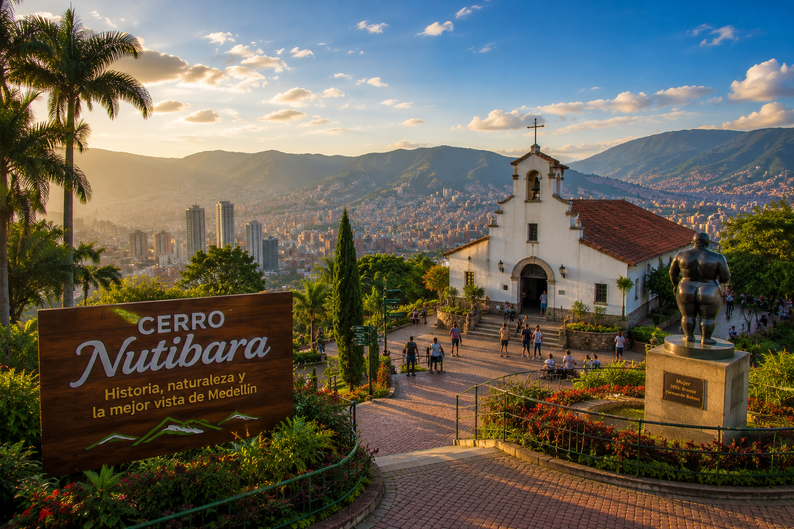

Programación Oficial de la Feria de las Flores
Descubre todos los eventos culturales, desfiles, conciertos, gastronomía y lugares turísticos que harán parte de la Feria de las Flores.

🌺 Eventos Principales
Conoce las actividades más importantes de la Feria de las Flores.
🌸 Desfile de Silleteros
Evento principal donde los silleteros presentan sus increíbles creaciones florales.
📅 Agosto 10
📍 Avenida Regional
Ver detalles
🎵 Conciertos
Presentaciones musicales, artistas invitados y espectáculos culturales.
📅 Agosto 12
📍 Plaza Mayor
Ver detalles
🚗 Autos Clásicos
Disfruta una exposición de vehículos clásicos que hacen parte de la historia automovilística.
📅 Agosto 13
📍 Medellín
Ver detalles
🍴 Feria Gastronómica
Descubre la mejor comida típica antioqueña y una gran variedad de sabores tradicionales.
📅 Toda la semana
📍 Parque Norte
Ver detalles📍 Sitios Recomendados
Explora algunos de los lugares más representativos de Medellín.

🌸 Santa Elena
Cuna de los silleteros y patrimonio cultural de Antioquia.

🎨 Plaza Botero
Esculturas del maestro Fernando Botero y uno de los sitios más visitados.

🌳 Jardín Botánico
Naturaleza, biodiversidad y espacios para disfrutar en familia.

⛰ Cerro Nutibara
Uno de los mejores miradores para contemplar toda la ciudad.
🗺️ Ubicaciones de los Eventos
Consulta fácilmente dónde se realizará cada actividad de la Feria.
📍 Plaza Mayor
Centro de convenciones donde se realizan conciertos y espectáculos culturales.
🎡 Parque Norte
Espacio ideal para actividades familiares y la feria gastronómica.
🏙 Medellín
Ciudad anfitriona de la Feria de las Flores.
🚗 Avenida Regional
Escenario principal del tradicional Desfile de Silleteros.